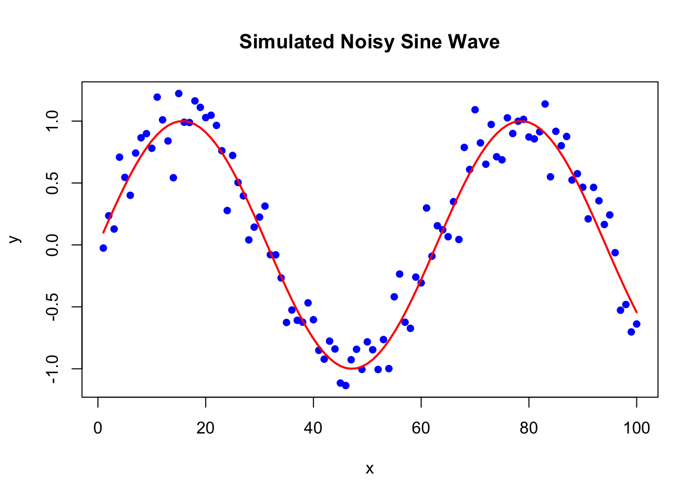

# Set seed for reproducibility
set.seed(1)
# Generate x values from 1 to 100
x <- 1:100
# Generate noise from a normal distribution with mean 0 and standard deviation 0.2
e <- rnorm(length(x), mean = 0, sd = 0.2)
# Generate y values as a noisy sine wave
y <- sin(x / 10) + e
# Combine into a data frame
sim_data <- data.frame(x, y)
# Plot the simulated data
plot(x, y, main = "Simulated Noisy Sine Wave", xlab = "x", ylab = "y", pch = 16, col = "blue")
lines(x, sin(x / 10), col = "red", lwd = 2) # True sine function for reference